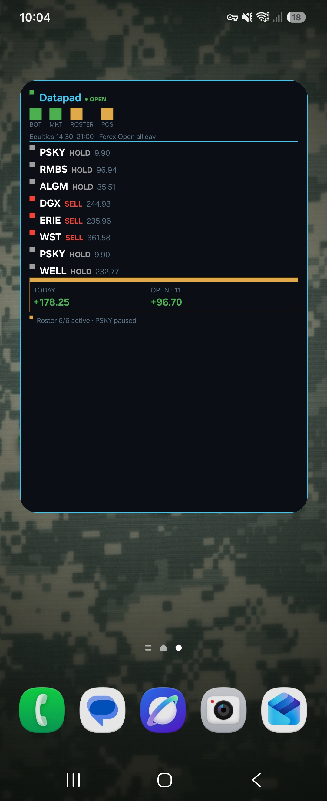

Case Study
A native Android home-screen widget showing live trading signals and running daily P&L, glanceable with no app open, built with Jetpack Glance.
A silent widget freeze: the widget would stop updating entirely with no crash, no error, and nothing visibly wrong, just a home-screen tile stuck on stale data.
Root cause was a hidden Glance limit: its Column layout silently caps at 10 children, and the widget's content had grown past that without any build-time warning. Screenshots alone couldn't show it (the widget just looked "stuck"); the real cause only surfaced by pulling live adb logcat output from the actual device while it happened.
Restructured the widget's layout to stay under the limit, and treated the discovery as a reason to actually read Glance's layout constraints properly rather than add another workaround.
